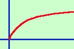
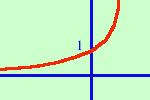
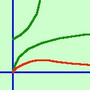

|
Disegnare approssimativamente il grafico per la funzione: y = ------ ex Il campo di esistenza per la funzione e' individuato dal fatto di esservi tra le funzioni la radice, quindi dovra' essere C.E. {x Scompongo la funzione: posso considerarla quoziente di due funzioni  La prima: y =  La seconda: y = ex e' la funzione esponenziale Ora  la mia funzione di partenza sara' il quoziente delle funzioni parziali, cioe' bastera' che punto per punto intuitivamente io faccia il quoziente dei valori che hanno le ordinate delle due funzioni parziali. In verde le due funzioni componenti. In rosso la loro funzione quoziente. |